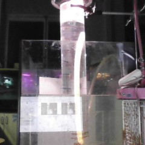
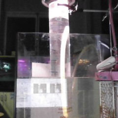

Yeast analysis
Help us!
We need to analyze 0 images. Spot the water level and help us bit by bit.
The data
See thousands of datapoints over several trials.
We need to analyze 0 images. Spot the water level and help us bit by bit.
See thousands of datapoints over several trials.